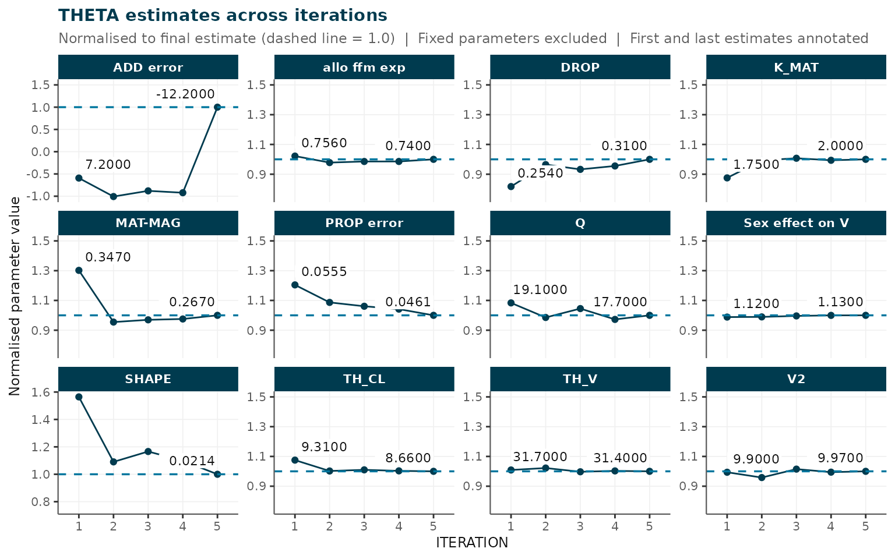
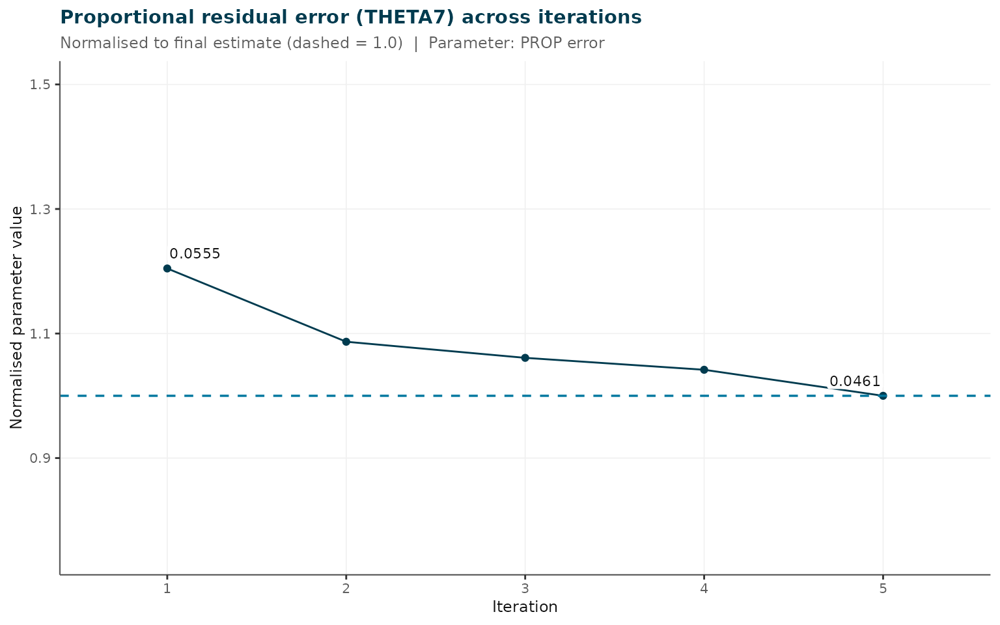
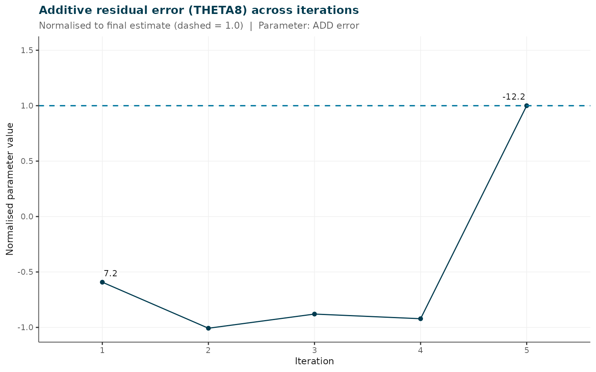

Simulated Busulfan PK: Part 2 — Model-Informed Iterative Cleaning
Source:vignettes/busulfan_pt2_modelbased_cleaning.Rmd
busulfan_pt2_modelbased_cleaning.RmdOverview
Prerequisites: This vignette continues from Part 1 (
busulfan_pt1_gc_exclusion). Run Part 1 first and savebusulfan_pt1_ready.csvto your working directory before proceeding here. Part 1 covers dataset loading, concentration visualisation, gross QC withassess_data_quality(), covariate anomaly investigation, and structured exclusion criteria.
This vignette walks through the model-informed
cleaning stages of an irxclean analysis using the simulated
busulfan pharmacokinetic dataset. It covers Phase 2 of the full
workflow: NONMEM-based iterative observation flagging, parameter
stability assessment, demographic comparison, and HTML report
generation.
Intentional errors remaining after Phase 1
After Part 1 removes the subject with a weight decimal error (ID 18), the following errors remain in the dataset for the model to detect:
| FLAG bit | Error type | Count |
|---|---|---|
| 2 | Concentration IQR outlier (>3*IQR above Q3 per TAD bin) | 2 observations |
| 4 | Timing error (+/- 5, 10, 30, or 60 minutes from true time) | 10 observations |
| 8 | Concentration magnitude error (multipliers 0.25–1.75x) | 10 observations |
1. Load the Phase 1 dataset
Load busulfan_pt1_ready.csv saved at the end of Part 1.
If that file is not present in the working directory (e.g. when
rendering from the package without running Part 1 first), the raw
simulated dataset is used as a fallback — note that in this case one
extra subject (ID 18) with a covariate error remains in the data.
pt1_file <- "busulfan_pt1_ready.csv"
if (file.exists(pt1_file)) {
dat <- read.csv(pt1_file)
message("Loaded Phase 1 output: ", pt1_file)
} else {
message(
"busulfan_pt1_ready.csv not found -- falling back to raw dataset.\n",
"Run busulfan_pt1_gc_exclusion first to generate the cleaned input."
)
dat <- read.csv(system.file("extdata", "busulfan_sim.csv",
package = "irxclean"))
}
#> busulfan_pt1_ready.csv not found -- falling back to raw dataset.
#> Run busulfan_pt1_gc_exclusion first to generate the cleaned input.
cat(sprintf(
"Patients: %d | Rows: %d | Observations: %d\n",
length(unique(dat$ID)), nrow(dat), sum(dat$EVID == 0)
))
#> Patients: 100 | Rows: 1600 | Observations: 12002. Iterative observation flagging (NONMEM required)
remove_erroneous_obs() fits NONMEM iteratively, removing
the observation with the largest |CWRES| at each step. Three input modes
are supported — see ?remove_erroneous_obs for details. Here
we demonstrate Mode 3: pass the dataset as an in-memory
R data frame (no separate file copy needed) and point mod
at the bundled model file path.
Results are cached to busulfan_results.RDS in the
working directory so subsequent renders skip the NONMEM run. If neither
a cache file nor a PsN/NONMEM installation is present, the 5-iteration
pre-computed result bundled with the package is used as a fallback.
cache_file <- "busulfan_results.RDS"
if (file.exists(cache_file)) {
results <- readRDS(cache_file)
message("Loaded cached results from ", cache_file)
} else if (nzchar(Sys.which("execute"))) {
# Mode 3: pass data frame directly; model given as a file path
results <- remove_erroneous_obs(
dat = dat, # Phase 1 cleaned data frame
mod = system.file("extdata", "pk_busulfan_ucsf_2025.mod",
package = "irxclean"),
run_id = "busulfan_removal",
n = 20
)
saveRDS(results, cache_file)
message("Results saved to ", cache_file)
} else {
message("NONMEM/PsN not found and no cache -- loading package testdata.")
results <- readRDS(system.file("testdata", "rem_test_results.RDS",
package = "irxclean"))
}
#> NONMEM/PsN not found and no cache -- loading package testdata.
cat("Iterations completed:", nrow(results$rmse), "\n")
#> Iterations completed: 5
cat("Flagged observations (ranked by |CWRES|):\n")
#> Flagged observations (ranked by |CWRES|):
print(results$rem[, c("ID", "TIME", "DV", "CWRES")])
#> ID TIME DV CWRES
#> 1 1051 28.2170 1444 -7.9412
#> 2 279 3.0000 988 5.4563
#> 3 1548 30.8330 637 -4.6804
#> 4 527 29.8330 1432 -4.5255
#> 5 33 3.2166 2090 -4.49703. Removal metrics
plot_removal_metrics(results, metric = "pOFV", verbose = FALSE)
#> `geom_line()`: Each group consists of only one observation.
#> ℹ Do you need to adjust the group aesthetic?
#> `geom_line()`: Each group consists of only one observation.
#> ℹ Do you need to adjust the group aesthetic?
Change in pseudo-OFV per iteration. A sharp early drop followed by a plateau suggests meaningful early removals with diminishing returns.
plot_removal_metrics(results, metric = "thetas", verbose = FALSE)
THETA estimates normalised to final value. Free axes per panel; phantom reference lines at 0.75 and 1.5 ensure consistent scale even when individual parameters are stable.
plot_removal_metrics(results, metric = "rmse", verbose = FALSE)
nRMSE across iterations.
4. Error parameter trajectories
Proportional and additive residual error parameters are auto-detected
from the param_labels element of the results (parsed from
$THETA comments in the model file). For this model,
THETA7 is proportional error and THETA8 is
additive. The detection source is printed when
quiet = FALSE in generate_report().
detected <- irxclean:::.find_error_params(
results$param_labels, results$par, verbose = TRUE
)
#> irxclean: Auto-detected error parameters (source: THETA label):
#> Proportional : "THETA7" (label: "PROP error")
#> Additive : "THETA8" (label: "ADD error")
#> Override via prop_error_param / add_error_param (e.g. "THETA(7)" or "SIGMA(1)").
irxclean:::.plot_param_trajectory(
results,
detected$prop_col,
title = "Proportional residual error (THETA7) across iterations"
)
Proportional residual error (THETA7) stability across iterations.
irxclean:::.plot_param_trajectory(
results,
detected$add_col,
title = "Additive residual error (THETA8) across iterations"
)
Additive residual error (THETA8) stability across iterations.
5. Model stability
stability <- check_model_stability(results, threshold_pct = 20)
#>
#> irxclean :: Model stability check (threshold: 20%)
#> --------------------------------------------------
#> Parameters assessed : 17 (fixed excluded)
#> stable : 10
#> drifted : 6
#> unstable : 1
#> Unstable: ADD error
#> nRMSE trend: decreasing
print(stability)
#> irxclean model stability (threshold: 20%)
#> stable : 10 parameter(s)
#> drifted : 6 parameter(s)
#> unstable : 1 parameter(s)
#>
#> Parameter summary:
#> PARAMETER RSE_PCT N_REVERSALS CV_LATE_PCT DRIFT_PCT STATUS
#> TH_CL 3.161 2 2.17e-01 7.004 stable
#> TH_V 0.989 3 1.97e-01 0.899 stable
#> MAT-MAG 14.145 1 1.76e+00 23.199 drifted
#> K_MAT 5.688 2 4.51e-01 14.244 drifted
#> PROP error 7.143 0 2.90e+00 16.976 drifted
#> ADD error 175.361 3 3.46e+03 268.871 unstable
#> DROP 7.458 2 3.22e+00 22.378 drifted
#> SHAPE 18.645 2 6.66e+00 36.079 drifted
#> allo ffm exp 1.742 1 1.02e+00 2.136 stable
#> Sex effect on V 0.559 0 2.37e-02 1.191 stable
#> Q 4.525 3 1.97e+00 7.710 stable
#> V2 2.101 3 4.00e-01 0.623 stable
#> IIV CL 0.432 2 1.31e-01 0.137 stable
#> IIV V1 2.419 1 1.69e+00 5.788 stable
#> IOV CL 0.636 3 5.51e-01 0.121 stable
#> IOV V1 3.202 3 2.83e+00 0.937 stable
#> IIV V2 16.136 2 8.12e+00 19.579 drifted
#>
#> nRMSE trend: decreasing
flag_tbl <- stability_flag_table(stability)
if (nrow(flag_tbl) > 0) knitr::kable(flag_tbl, digits = 2) else
cat("All parameters stable.\n")| PARAMETER | MEAN | FIRST | LAST | RSE_PCT | N_REVERSALS | CV_LATE_PCT | DRIFT_PCT | STATUS | |
|---|---|---|---|---|---|---|---|---|---|
| 6 | ADD error | 5.83 | 7.2 | -12.15 | 175.36 | 3 | 3464.64 | 268.87 | unstable |
6. Demographic comparison
plot_demographic_comparison(
data = dat,
results = results,
continuous_cols = c("AGE", "WT", "HT"),
categorical_cols = "SEX"
)
#> Warning in stats::chisq.test(contingency, correct = FALSE): Chi-squared
#> approximation may be incorrect
#> TAD column not found - computed from dose records (EVID == 1 / AMT > 0).
#> irxclean demographic comparison (5 subjects with removed obs)
#>
#> Statistical tests:
#> covariate test p_value significant
#> AGE Wilcoxon rank-sum 0.6154182 FALSE
#> WT Wilcoxon rank-sum 0.6524481 FALSE
#> HT Wilcoxon rank-sum 0.7030824 FALSE
#> SEX Chi-squared 0.3342398 FALSE7. Apply final exclusions
After reviewing the ranked flagged observations, apply user-approved exclusions:
cleaned <- remove_observations_from_data(
data = dat,
results = results,
n = 10 # remove top 10ranked observations
)
write.csv(cleaned, "busulfan_cleaned.csv", row.names = FALSE)
cat("Cleaned dataset:", nrow(cleaned), "rows\n")8. Generate HTML report
generate_report() compiles all findings into a
structured, self-contained HTML report. Proportional and additive error
parameters are auto-detected from results$param_labels;
override explicitly if needed using either the column name
("THETA7") or NONMEM index notation
("THETA(7)").
generate_report(
results = results,
data = dat,
# Auto-detected; shown here for illustration -- override if needed:
prop_error_param = "THETA(7)",
add_error_param = "THETA(8)",
continuous_cov_cols = c("AGE", "WT", "HT"),
categorical_cov_cols = "SEX",
title = "Busulfan PK -- Model-Informed Cleaning Report",
output_file = "busulfan_irxclean_report.html",
quiet = FALSE # prints auto-detection summary
)Session information
sessionInfo()
#> R version 4.5.3 (2026-03-11)
#> Platform: x86_64-pc-linux-gnu
#> Running under: Ubuntu 24.04.4 LTS
#>
#> Matrix products: default
#> BLAS: /usr/lib/x86_64-linux-gnu/openblas-pthread/libblas.so.3
#> LAPACK: /usr/lib/x86_64-linux-gnu/openblas-pthread/libopenblasp-r0.3.26.so; LAPACK version 3.12.0
#>
#> locale:
#> [1] LC_CTYPE=C.UTF-8 LC_NUMERIC=C LC_TIME=C.UTF-8
#> [4] LC_COLLATE=C.UTF-8 LC_MONETARY=C.UTF-8 LC_MESSAGES=C.UTF-8
#> [7] LC_PAPER=C.UTF-8 LC_NAME=C LC_ADDRESS=C
#> [10] LC_TELEPHONE=C LC_MEASUREMENT=C.UTF-8 LC_IDENTIFICATION=C
#>
#> time zone: UTC
#> tzcode source: system (glibc)
#>
#> attached base packages:
#> [1] stats graphics grDevices utils datasets methods base
#>
#> other attached packages:
#> [1] irxclean_0.1.0
#>
#> loaded via a namespace (and not attached):
#> [1] Matrix_1.7-4 gtable_0.3.6 jsonlite_2.0.0 dplyr_1.2.1
#> [5] compiler_4.5.3 tidyselect_1.2.1 stringr_1.6.0 tidyr_1.3.2
#> [9] jquerylib_0.1.4 splines_4.5.3 systemfonts_1.3.2 scales_1.4.0
#> [13] textshaping_1.0.5 yaml_2.3.12 fastmap_1.2.0 lattice_0.22-9
#> [17] ggplot2_4.0.2 R6_2.6.1 labeling_0.4.3 vpc_1.2.4
#> [21] generics_0.1.4 patchwork_1.3.2 knitr_1.51 tibble_3.3.1
#> [25] desc_1.4.3 bslib_0.10.0 pillar_1.11.1 RColorBrewer_1.1-3
#> [29] rlang_1.2.0 stringi_1.8.7 cachem_1.1.0 xfun_0.57
#> [33] fs_2.0.1 sass_0.4.10 S7_0.2.1 cli_3.6.6
#> [37] mgcv_1.9-4 withr_3.0.2 pkgdown_2.2.0 magrittr_2.0.5
#> [41] digest_0.6.39 grid_4.5.3 nlme_3.1-168 lifecycle_1.0.5
#> [45] vctrs_0.7.3 evaluate_1.0.5 glue_1.8.0 farver_2.1.2
#> [49] ragg_1.5.2 purrr_1.2.2 rmarkdown_2.31 tools_4.5.3
#> [53] pkgconfig_2.0.3 htmltools_0.5.9